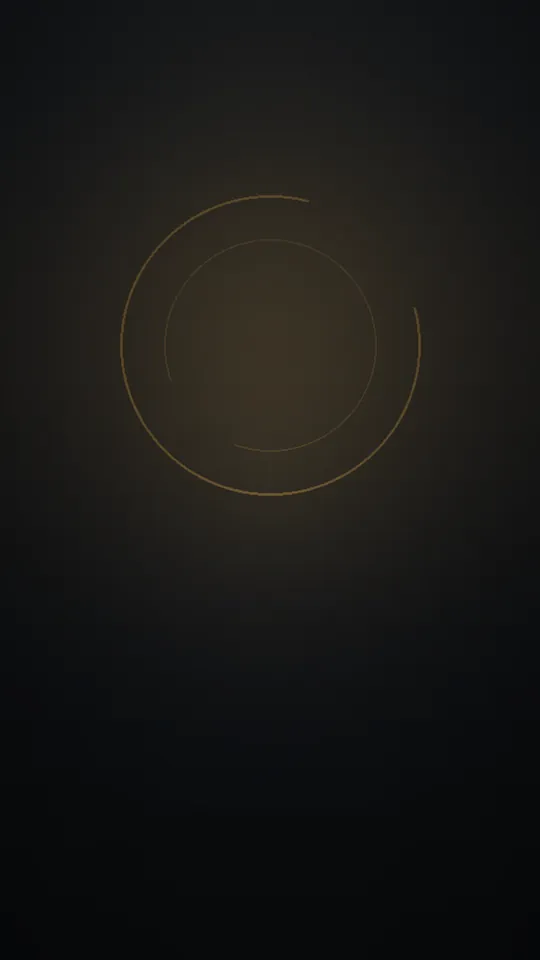
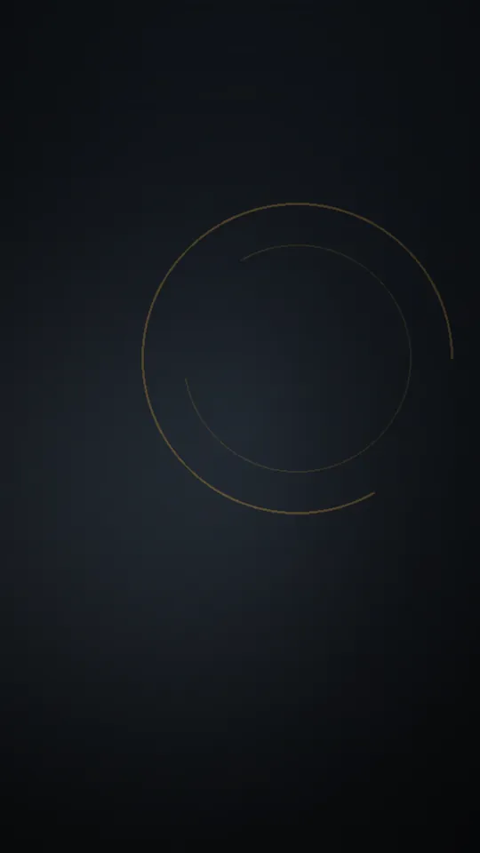
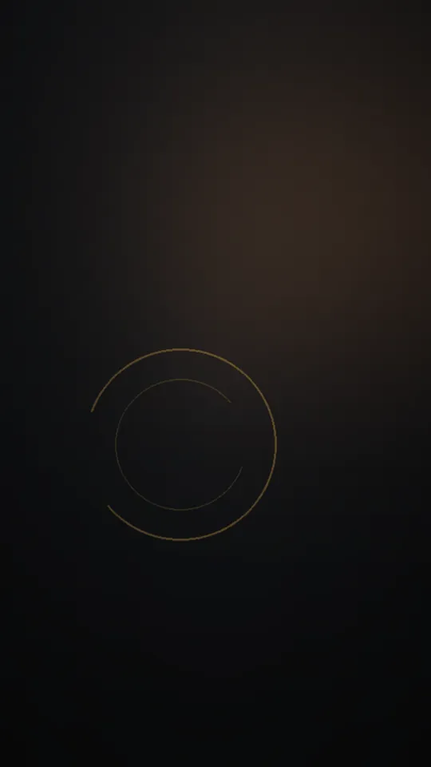

Chaîne de vidéos courtes en français
Zone de doute
Et si ce que tu tenais pour certain ne l’était pas ?
Le principe
Chaque vidéo part d’une question que l’on croyait réglée : une expérience de pensée, un paradoxe, un mystère de l’existence. Elle la retourne, la regarde sous un autre angle, puis la laisse ouverte. Pas de réponse toute faite, seulement une voix calme et un doute qui reste.
Ce dont on doute ici
-
Expériences de pensée
Des scénarios imaginaires poussés jusqu’au vertige, pour tester ce que tu crois savoir.
-
Paradoxes scientifiques
Quand la logique et l’intuition ne racontent plus la même histoire.
-
Philosophie et psychologie
Ce que tu penses, pourquoi tu le penses, et ce que cela dit de toi.
-
Mystères de l’existence
Le temps, la conscience, le hasard : des questions qui ne se referment jamais tout à fait.
À voir en premier
Trois vidéos pour commencer.


La voix
Zone de doute est une chaîne de vidéos courtes en français, au format vertical. Chaque épisode est pensé comme un petit film sombre et réaliste, porté par une narration calme et grave.